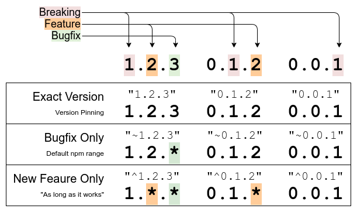
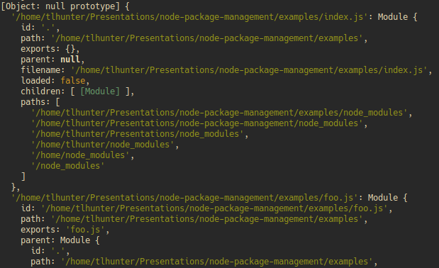

Node.js Package Management
Thomas Hunter II
Adapted from Distributed Systems with Node.js:
bit.ly/34SHToF
Basics
How do dependencies work?
Let's Define some Terms
- A Module is a
require()-able file containing code
- A Package is an archive of modules, supporting files
- A Dependency is a Package that an app depends on
- A Package makes it easy to distribute modules
- Packages are hosted on npmjs.com
- Packages should be beneficial to different apps
- Most applications have >95% LoC in dependencies:
$ npx @intrinsic/loc
Dependency Installation
- Dependencies are listed in package.json
- There are several CLI tools to manage packages
- Latest Node.js ships with
corepack wrapper
- Applications can have deps and dev deps
- Dependencies are extracted to node_modules/
- Install scripts, compilation, non-determinism
$ npm init # creates package.json, node_modules/
$ npm install foo # installs node_modules/foo
Packages are Versioned
- Packages follow SemVer (Semantic Versioning)
- Definition of
MAJOR.MINOR.PATCH changes:

Dependency Tree
Where do those dependencies go?
Logical Dependency Tree
- Dependencies have Subdependencies
- Aka Transitive Dependencies
app@1.0.0
├── qs@6.7.0
├── pg@8.3.0
└─┬ express@4.17.1
├── qs@6.7.0
└── content-type@1.0.4
Physical Dependency Tree, Naive
- Filesystem resembles logical tree
- Notice how the
qs module is duplicated
- Circular references = infinite filesystem usage
app/
app/node_modules/qs
app/node_modules/pg
app/node_modules/express
app/node_modules/express/node_modules
app/node_modules/express/node_modules/qs
app/node_modules/express/node_modules/content-type
Physical Dependency Tree, Deduplicated
- Common modules are “hoisted” up
- The duplicated
qs module is removed
- Cannot remove all duplicate packages from disk
app/
app/node_modules/qs
app/node_modules/pg
app/node_modules/express
app/node_modules/express/node_modules
app/node_modules/express/node_modules/content-type
Determining Physical Tree is Complex
- Situation #1: Compatible versions are deduped
foo depends on qs@~5.1.2bar depends on qs@~5.1.4qs@5.1.9 is installed and hoisted
- Situation #2: Incompatible versions aren't deduped
foo depends on qs@~5.1.2bar depends on qs@~6.2.3qs@6.2.9 is installed and hoistedqs@5.1.9 is installed at foo/node_modules/qs
Another Dependency Tree Approach
- The
pnpm package manager uses symlinks
- Creates a node_modules/.pnpm directory
- node_modules/foo is a symlink to:
- .pnpm/foo@1.2.3/node_modules/foo
foo's dependencies are symlink'd here:
- .pnpm/foo@1.2.3/node_modules/*
- This approach results in minimal disk usage
Install Determinism
- Each
$ npm install can grab different deps
- Due to package ranges and package publishes
- The npm CLI supports a package-lock.json file
- This file enforces an exact dependency hierarchy
- After a while
$ npm outdated results appear
- No lock can provide 100% deterministic filesystem
Module Resolution
How does require() work?
Overview of require()
- Paths beginning with
. or / look for modules
- Global packages aren't readily require-able
- Looks for packages in node_modules/ up to root
- Determines the absolute path to module for caching
- Requires a “Module Resolution Algorithm”
Module Resolution Examples
Module resolution from /srv/server.js
require('url') | Core url module |
require('./module.js') | /srv/module.js |
require('left-pad') | /srv/node_modules/left-pad/,
/node_modules/left-pad/ |
require('foo.js') | /srv/node_modules/foo.js/,
/node_modules/foo.js/ |
require('./foo') | /srv/foo.js, /srv/foo.json, /srv/foo.node,
/srv/foo/index.js, /srv/foo/index.json... |
Require Cache
- Requiring the same file twice hits the cache
- The cache is available at
require.cache

Best Practices
What's the best way to use this stuff?
Deployment and Workflow
- Use
$ npm outdated to list outdated packages
- Use a tool like
$ npx depcheck to find orphans
- Don't check node_modules/ into repository
- Never deploy dev dependencies to production
Requiring Packages
- Specify file extensions when using
require()
- This eliminates ambiguity, broken refactors
- Also helps with code completion
- Never
require() a transitive dependency
- It will work today and break tomorrow
instanceof breaks for packages at different paths
- Duck typing or
Symbol.hasInstance can help
Security Concerns
- Use the fewest number of packages possible
- Favor modules with few or zero dependencies
- Consult
$ npm ls after installing new packages
- Malicious Modules, typo squatting are a real threat